概率论
第一章 随机事件与概率
- 随机现象：事件发生的条件与结果之间具有不确定性关系。在一定条件下可能出现，也可能不出现的现象。
- 必然现象：事件发生的条件与结果之间具有确定性关系。在一定条件下相应的结果必然发生的现象。
- 随机现象二重性
- 偶然性：对随机现象进行一次观察，结果具有不确定性
- 必然性：对随机现象进行大量重复观察，结果呈现一定统计规律性
- 概率论与数理统计：研究和揭示随机现象的规律
- 随机试验：在相同条件下重复进行一系列实验和观察
- 随机试验三个特点
- 可重复：可在相同的条件下重复进行
- 多结果：结果不止一个，所有可能结果事先已知
- 不确定：试验前无法预测/确定哪一种结果
- 样本空间：随机试验$E$所有可能的结果构成的集合，记 $\Omega$
- 样本点：样本空间的每个元素，即试验$E$的每一种结果，记 $w$
- 随机事件：某些样本点构成的集合，本质是样本空间的子集
- 基本事件：只含一个样本点
- 必然事件：全集，$\Omega$
- 不可能事件：空集
包含事件：事件$A$发生必将导致事件$B$发生，称$B$包含$A$，记 $A\subset B$
- A发生可以理解成A有，B必发生可以理解为B一定有。A有，事件B一定有，则称B包含A。
事件的差：$A-B=A-AB=A\overline{B}=(A\bigcup B)-B$
- 对偶律/德摩根律：$\overline{A\bigcup B}=\overline{A}\bigcap\overline{B}$
- $\overline{BC}≠\overline{B}\,\overline{C}$
- 概率 vs 统计
- 概率：==研究事情的不确定性==，在给定数据生成过程中观察、研究数据的性质，强调==公理体系、推理==
- 统计：==收集与分析数据==，根据观察的数据反思其数据生成过程，强调==归纳==
- 最大区别：公理体系化
- 概率 vs 频率
- 概率用来度量事件发生的可能性，是事件的固有属性；频率在一定程度上反映事件发生的可能性
- 概率是恒定的；频率在试验中具有随机性
- 若试验次数足够多，频率与概率很接近
- 概率可以用频率来“测量”，频率是概率的一个近似
- 频率的公理化定义
- 在随机试验的样本空间 $\Omega$ 上，对于每一个事件 $A$ 赋予一个实数，记为 $P(A)$，若满足非负性、规范性、可列可加性，称 $P(A)$ 为事件 $A$ 发生的概率。
- 非负性：$P(A)\geq 0$
- 规范性：$P(\Omega)=1$
- 可列可加性：若 $A_1,A_2…$ 可列个两两互不相容的事件，则 $P(\bigcup^{∞}_{i=1}A_i)=\sum^{∞}_{i=1}P(A_i)$
- 若 $B\subset A$，则 $P(A-B)=P(A)-P(B)$ 和 $P(B)\leq P(A)$
- $P(A-B)=P(A)-P(AB)=P(A\bigcup B)-P(B)=P(A\overline{B})$
- 用 $A=(A-B)\bigcup (AB),A\bigcup B=(A-B)\bigcup B$ 用可列可加性
- 已知概率，不能推事件。概率为0的不一定是不可能事件；概率为1的事件不一定是必然事件。反例：连续函数/几何概型在一个样本点处的概率
- 古典概型：试验结果只有有限种可能 $\Omega=\{w_1,..w_n\}$，每种结果发生的可能性相同 $P(w_i)=P(w_j)$. 若事件 $A$ 包含 $k$ 个基本事件，则事件 $A$ 发生的概率为 $P(A)=k/n=|A|/|\Omega|$.
- 几何概型：样本空间无限可测；基本事件等可能性。在一个测度有限的区域 $\Omega$ 内等可能性投点，落入 $\Omega$ 内的任意子区域 $A$ 的可能性与 $A$ 的测度成正比，与 $A$ 的位置与形状无关，这样的概率模型称之为几何概型
- 计数的两条基本原理：加法原理，乘法原理
第二章 条件概率与独立性
条件概率
- 非负性，规范性，可列可加性，容斥原理
- $P(B_1-B_2|A)=P(B_1|A)-P(B_1B_2|A)$
- 计算方法：定义；空间缩减法
乘法公式：$P(A_1A_2..A_n)=P(A_1)P(A_2|A_1)P(A_3|A_1A_2)..P(A_n|A_1A_2..A_{n-1})$
全概率公式
- 若事件 $A_1,A_2,..A_n$ 为样本空间 $\Omega$ 的一个划分，对任意事件 $B$ 有 $P(B)=\sum^n_{i=1}P(BA_i)=\sum_{i=1}^nP(A_i)P(B|A_i)$
- 可将事件 $B$ 看作某一过程的结果，将 $A_1,A_2..A_n$ 看作产生该结果的若干原因。若每一种原因已知；每一种原因对结果的影响已知，则 $P(B)$ 可计算
贝叶斯公式
- 若事件 $A_1,A_2,..A_n$ 为样本空间 $\Omega$ 的一个划分，且事件 $B$ 满足 $P(B)>0$，则 $P(A_i|B)=\frac{P(A_iB)}{P(B)}=\frac{P(A_i)P(B|A_i)}{\sum_{j=1}^nP(A_j)P(B|A_j)}$
- 研究在一种结果已发生的情况下是何种原因导致的。即观察在事件 $B$ 已经发生的情况下，寻找导致 $B$ 发生原因的概率
- $P(B)$ 是证据概率；$P(A_i|B)$ 是事件 $A_i$ 在事件 $B$（证据）发生的情况下的后验概率；$P(B|A_i)$ 是似然度
- $后验概率=\frac{先验概率×似然度}{证据概率}=常量×似然度$，可知后验概率与似然度成正比
- 事件的独立性
- $P(AB)=P(A)P(B)\Leftrightarrow P(B|A)=P(B)\Leftrightarrow P(A|B)=P(A)$
- $A 和 B独立\Leftrightarrow A和\overline{B}独立\Leftrightarrow\overline{A}和B独立\Leftrightarrow \overline{A}和\overline{B}独立$
- 任何事件与不可能事件（或必然事件）相互独立
- 独立性与互不相容性的关系
- 反映的是事件不同的性质，无必然联系
- $P(AB)=P(A)P(B)$ 独立性与概率相关，反映事件的概率属性
- $AB=\empty$ 互斥性与事件的运算关系相关，与概率无关
- 独立不一定互斥；互斥不一定独立
- 事件 $A,B,C$ 的相互独立与 $A,B,C$ 的两两独立
- 由事件 $A,B,C$ 相互独立可知事件 $A,B,C$ 两两独立；反之不一定成立，还需满足 $P(ABC)=P(A)P(B)P(C)$
- 若事件 $P(B)\in(0,1)$，则 $A和B独立\Leftrightarrow P(A|B)=P(A|\overline{B})\Leftrightarrow P(A|B)+P(\overline{A}|\overline{B})=1$
- 小概率原理
- 若事件 $A$ 在一次试验中发生的概率非常小，但经过多次独立地重复试验，事件 $A$ 的发生是必然的
- 独立重复多次的小概率事件亦可成为必然事件
- 事件独立，$P(A\bigcup B\bigcup C)=1-P(\overline{A})P(\overline{B})P(\overline{C})$
第三章 离散型随机变量
- 随机变量：将样本空间 $\Omega$ 中每个样本点与一个实数 $X(w)$ 相对应，$X(w)$ 是 $w$ 的实值函数，称实值函数 $X(w):\Omega\rightarrow \mathbb{R}$ 为随机变量
- 离散型随机变量：随机变量 $X$ 有限的，或无限可列的（分布列）；非离散型随机变量：无限不可列（概率密度）
- 期望，级数 $\sum^∞_{k=1}p_kx_k$ 的绝对收敛保证了级数和不随级数各项次序的改变而改变
- 凸函数 $g(E(X))\leq E(g(X))$。离散型随机变量，用数学归纳法证明
- 方差：$Var(X)=E(X-E(X))^2=E(X^2)-(E(X))^2$
- 计算随机变量 $X$ 的方差需要遍历 $x_1,x_2,…,x_n$ 几遍
- 若用 $Var(X)=E(X-E(X))^2$，需要遍历两遍，第一遍计算 $E(X)$，第二遍计算 $Var(X)$
- 若用 $Var(X)=E(X^2)-(E(X))^2$，只需遍历一遍，可在线计算方差，不需存储数据
- 0-1分布/Bernoulli分布 $X\sim Ber(p)$
- $E(X)=p$，$Var(X)=p-p^2=p(1-p)$
- 二项分布，从 $n$ 重Bernoulli试验中来，事件 $A$ 发生的次数 $X\sim B(n,p)$
- $E(X)=np$，$Var(X)=np(1-p)$
几何分布，在多重Bernoulli试验中事件 $A$ 首次发生时的试验次数，$P(X=k)=(1-p)^{k-1}p$，$X\sim G(p)$
- $E(X)=\frac{1}{p}$，$Var(X)=\frac{1-p}{p^2}$
- 无记忆性：$P(X>m+n|X>m)=P(X>n)$
- 证明：$P(X>k)=(1-p)^k$
负二项分布，多重试验中事件 $A$ 第 $r$ 次发生时所进行的试验次数
- $E(X)=\frac{r}{p}$，$Var(X)=\frac{r(1-p)}{p^2}$
- 泊松分布，$P(X=k)=\frac{\lambda^k}{k!}e^{-\lambda}$，$\lambda>0$ 是给定的常数，称随机变量 $X$ 服从参数为 $\lambda$ 的泊松分布，记 $X\sim P(\lambda)$
- 用于描述大量试验中稀有事件出现次数的概率模型，如：在一段时间内电话收到的呼叫次数，放射物在一段时间内放射的粒子数，一段时间内通过某路口的出租车数，一本书中一页出现的语法错误数，一天内到一所银行办理业务的顾客数
- $E(X)=\lambda$，$Var(X)=\lambda$
- 泊松定理（二项分布和泊松分布的关系）：对任意给定的常数 $\lambda>0$，$n$ 为任意正整数，设 $np_n=\lambda$，则对任意给定的非负整数 $k$，有 $\lim_{n\rightarrow ∞}C_n^k p_n^k(1-p_n)^{n-k}=\frac{\lambda^k}{k!}e^{-\lambda}$
- 泊松分布的应用：若随机变量 $X\sim B(n,p)$，当 $n$ 比较大而 $p$ 比较小时，令 $\lambda=np$，有 $P(X=k)=C_n^k p^k(1-p)^{n-k}\approx \frac{\lambda^k}{k!}e^{-\lambda}$，即利用泊松分布近似计算二项分布
第四章 连续型随机变量
- 分布函数：$F(x)=P(X\leq x)$，本质是概率
- 三条性质：单调性，规范性$(-∞,+∞)$，右连续性
- $P(x_1<X\leq x_2)=F(x_2)-F(x_1)$，$P(X=x_2)=F(x_2)-F(x_2-0)$
- $P(X>a)=1-F(a)$，$P(X<a)=F(a-0)=\lim_{x\rightarrow a^-}F(x)$，$F(x\geq a)=1-F(a-0)$
- 性质：若 $F_1(x),F_2(x)$ 是分布函数，则 $aF_1(x)+(1-a)F_2(x)$ 也是分布函数，其中 $a\in (0,1)$
- $F(x)$ 在 $(-∞,+∞)$ 连续
- 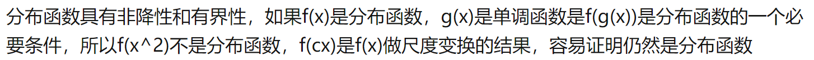
- 设随机变量 $X$ 的分布函数为 $F(x)$，如果存在可积函数 $f(x)$，使得对任意实数 $x$ 有 $F(x)=\int_{-∞}^x f(t)dt$ 成立，则称 $X$ 为连续型随机变量，函数 $f(x)$ 为随机变量 $X$ 的概率密度函数，简称概率密度
- 概率密度函数 $f(x)$ 满足非负性 $f(x)\geq 0$ 和规范性 $\int_{-∞}^{+∞}f(t)dt=1$
- 若 $f(x)$ 为偶函数，则有 $F(x)+F(-x)=1$
- 对连续随机变量 $X$，其分布函数 $F(x)$ 在整个实数域上连续；若 $f(x)$ 在 $x$ 点连续，则 $F(x)$ 在 $x$ 可导，且 $F’(x)=f(x)$
- 很多实际问题中可能不知道随机变量的分布，因此不能直接计算期望，但可以估计概率 $P(X>t)$ 来计算期望（采样…）
- 对非负随机变量 $X$，有 $E(X)=\int_0^{∞}P(X>t)dt$
- 推论：$E[g(X)]=\int^{+∞}_{-∞}g(x)f(x)dx=\int^{+∞}_0P(g(X)>t)dt$
- 均匀分布 $X\sim U(a,b)$
- $E(X)=\frac{a+b}{2}$，$Var(X)=\frac{(b-a)^2}{12}$
- 指数分布，给定常数 $\lambda>0$，若随机变量 $X$ 的密度函数 ，称 $X$ 服从参数为 $\lambda$ 的指数分布，记 $X\sim e(\lambda)$
- 一般用于时间等待等实际问题
- $E(X)=\frac{1}{\lambda}$，$Var(X)=\frac{1}{\lambda^2}$
- 无记忆性：$P(X>s+t|X>t)=P(X>s)$
- 证明：$P(X>x)=1-F(x)=e^{-\lambda x}$
- 指数分布是唯一具有无记忆性的连续型随机变量
- 标准正态分布的 $\alpha$ 分位数 $u_\alpha$ 满足 $P(X>u_\alpha)=\alpha$，$u_{1-\alpha}=-u_\alpha$
- 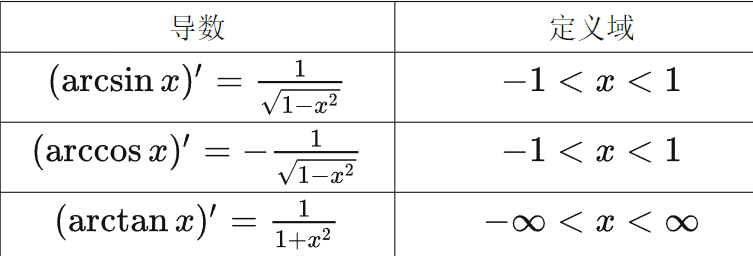
- 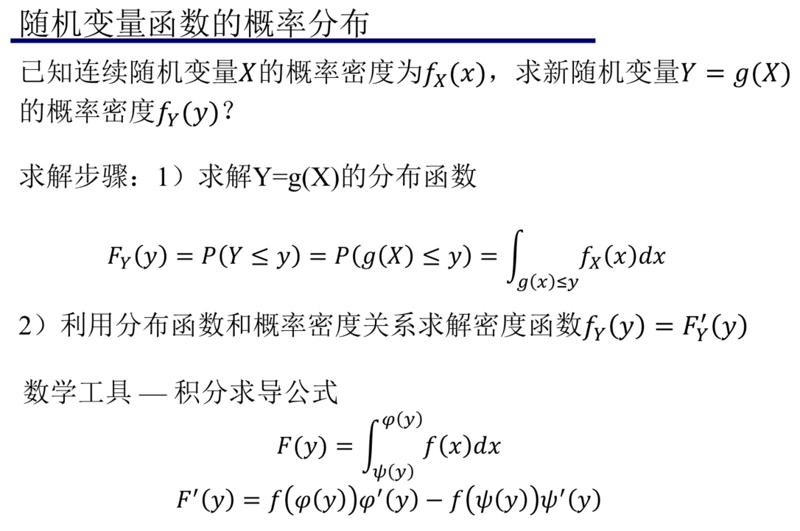
第五章 多维随机变量及其分布
- 二维随机变量：设 $X=X(w),Y=Y(w)$ 为定义在样本空间 $\Omega$ 上的随机变量，由它们构成的向量 $(X,Y)$ 称为二维随机变量
- 分布函数 $F(x,y)$
- 对每个变量单调不减
- $F(+∞,+∞)=1$，$F(-∞,y)=F(x,-∞)=F(-∞,-∞)=0$
- 分布函数 $F(x,y)$ 关于每个变量右连续
- 随机变量 $X$ 的边缘分布函数 $F_X(x)=P(X\leq x)=P(X\leq x,y<+∞)=F(x,+∞)=\lim_{y\rightarrow +∞}F(x,y)$
- 随机变量 $X$ 的边缘概率密度为 $f_X(x)=F_X’(x)=\int_{-∞}^{+∞}f(x,y)dy$
- 随机事件的独立性 $P(AB)=P(A)P(B)$ $\Rightarrow$ 随机变q量的ewtriopuy[]独立性
- 随机变量 $X,Y$ 相互独立：事件 $X\leq x$ 和 $Y\leq y$ 相互独立，即 $P(X\leq x,Y\leq y)=P(X\leq x)P(Y\leq y)\Leftrightarrow F(x,y)=F_X(x)F_Y(y)$
- 设随机变量 $X$ 与 $Y$ 相互独立，则 $f(X)$ 与 $g(Y)$ 也相互独立，其中 $f(x)$ 和 $g(y)$ 是连续或分段连续函数
- 如，若随机变量 $X$ 和 $Y$ 相互独立，则 $X^2$ 与 $Y^3$ 也相互独立，$\sin X$ 与 $\cos Y$ 相互独立
- 离散随机变量的独立性
- $P(X=x_i,Y=y_i)=P(X=x_i)P(Y=y_i)$，即 $p_{ij}=p_{i.}p_{.j}\Leftrightarrow F(x_i,y_i)=F_X(x_i)F_Y(y_i)$
- 二维连续型随机变量 概率密度函数 $f(x,y)$
- 若 $f(x,y)$ 在 $(x,y)$ 连续，则 $f(x,y)=\frac{\partial^2 F(x,y)}{\partial x\partial y}$
- 连续随机变量的独立性
- $F(x,y)=F_X(x)F_Y(y)\Leftrightarrow f(x,y)=f_X(x)f_Y(y)$
随机变量 $X$ 和 $Y$ 相互独立的等价条件：
- 分布函数 $F(x,y)=F_X(x)F_Y(y)$
- 概率密度 $f(x,y)=f_X(x)f_Y(y)$
- 条件概率 $f_{Y|X}(y|x)=f_Y(y)$
高斯分布几个定理
- 正态分布的边缘分布还是正态分布。设二维随机变量 $(X,Y)$ 服从正态分布 $\mathcal{N}(\mu,\Sigma)$，其中 $\mu=\begin{pmatrix} \mu_x \\ \mu_y\end{pmatrix} $ 和 $\begin{pmatrix} \sigma_x^2 & ρ\sigma_x\sigma_y \\ρ\sigma_x\sigma_y &\sigma_y^2 \end{pmatrix} $，有边缘分布 $X\sim \mathcal{N}(\mu_x,\sigma_x^2)$ 和 $Y\sim \mathcal{N}(\mu_y,\sigma_y^2)$。
- 即 $(X,Y)$ 服从二维正态分布可保证 $X$ 与 $Y$ 均服从一维正态分布，反过来则不能成立
- 设二维随机变量 $(X,Y)$ 服从正态分布 $\mathcal{N}(\mu,\Sigma)$，则 $X$ 与 $Y$ 独立的充要条件是 $\Sigma=\begin{pmatrix} \sigma_x^2 & 0 \\0&\sigma_y^2 \end{pmatrix} $
- 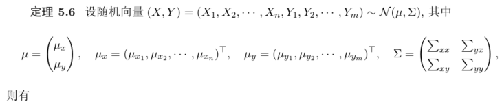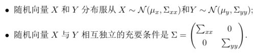

- 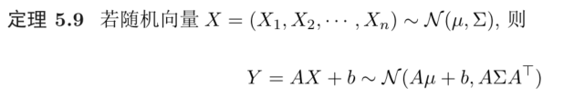
- 若随机变量 $X\sim \mathcal{N}(\mu_1,\sigma_1^2)$ 和 $Y\sim \mathcal{N}(\mu_2,\sigma_2^2)$ 相互独立，则 $X+Y\sim \mathcal{N}(\mu_1+\mu_2,\sigma_1^2+\sigma_2^2)$ （用卷积公式证明）
- 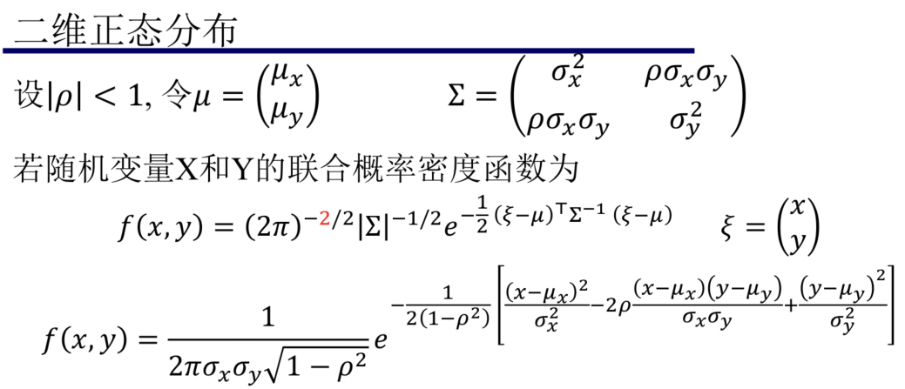
- 多维正态分布的条件分布是正态分布
- 在 $Y=y$ 的条件下，$X\sim \mathcal{N}(\mu_1-\frac{\sigma_1^2\rho(y-\mu_2)}{\sigma_2^2},\sigma_1^2(1-\rho^2))$
- 正态分布的边缘分布还是正态分布。设二维随机变量 $(X,Y)$ 服从正态分布 $\mathcal{N}(\mu,\Sigma)$，其中 $\mu=\begin{pmatrix} \mu_x \\ \mu_y\end{pmatrix} $ 和 $\begin{pmatrix} \sigma_x^2 & ρ\sigma_x\sigma_y \\ρ\sigma_x\sigma_y &\sigma_y^2 \end{pmatrix} $，有边缘分布 $X\sim \mathcal{N}(\mu_x,\sigma_x^2)$ 和 $Y\sim \mathcal{N}(\mu_y,\sigma_y^2)$。
- 设 $X_1,X_2,..,X_n$ 为 $n$ 个相互独立的随机变量，其分布函数分别为 $F_{X_i}(x_i)$，则随机变量 $Y=\max(X_1,X_2,..,X_n)$ 的分布函数为 $F_Y(y)=F_{X_1}(y)F_{X_2}(y)…F_{X_n}(y)$；随机变量 $Z=\min(X_1,X_2,..,X_n)$ 的分布函数为 $F_Z(z)=1-(1-F_{X_1}(z))(1-F_{X_2}(z))…(1-F_{X_n}(z))$
- 卷积公式
- 若连续随机变量 $X$ 与 $Y$ 相互独立，其概率密度函数分别为 $f_X(x)$ 和 $f_Y(y)$，则随机变量 $Z=X+Y$ 的密度函数为 $f_Z(z)=\int_{-∞}^{+∞}f_X(x)f_Y(z-x)dx=\int_{-∞}^{+∞}f_X(z-y)f_Y(y)dy$
- 若随机变量 $X\sim B(n_1,p)$ 和 $Y\sim B(n_2,p)$ 独立，则 $Z=X+Y\sim B(n_1+n_2,p)$
- 推论：若 $X_i\sim Ber(p)=B(1,p)$，那么 $\sum_{i=1}^n X_i\sim B(n,p)$
- 若随机变量 $X\sim P(\lambda_1)$ 和 $Y\sim P(\lambda_2)$ 相互独立，则 $Z=X+Y\sim P(\lambda_1+\lambda_2)$
- 随机变量的乘/除法分布
- 设二维随机变量 $(X,Y)$ 的概率密度为 $f(x,y)$，则随机变量 $Z=XY$ 的概率密度为 $f_{XY}(z)=\int_{-∞}^{+∞}\frac{1}{|x|}f(x,\frac{z}{x})dx$，随机变量 $Z=\frac{Y}{X}$ 的概率密度为 $f_{\frac{Y}{X}}(z)=\int_{-∞}^{+∞}|x|f(x,xz)dx$
- 条件分布列：二维离散型随机变量 $(X,Y)$ 的分布列为 $\{p_{ij}\}$，称 $P(X=x_i|Y=y_i)=\frac{P(X=x_i,Y=y_i)}{P(Y=y_i)}=\frac{P_{ij}}{P_{\cdot j}}$ 在 $Y=y_i$ 条件下随机变量 $X$ 的条件分布列
- 条件概率密度：随机变量 $(X,Y)$ 的联合概率密度为 $f(x,y)$，以及 $Y$ 的边缘概率密度为 $f_Y(y)>0$，称 $f_{X|Y}(x|y)=f(x,y)/f_Y(y)$ 在 $Y=y$ 条件下随机变量 $X$ 的条件概率密度
- 联合概率密度 / 边缘概率密度
- $e^{-x^2}$ 积分是 $\sqrt{\pi}$，$e^{-\frac{x^2}{2}}$ 积分是 $\sqrt{2\pi}$
- 条件分布函数：$F_{X|Y}(x|y)=P(X\leq x|Y=y)=\int_{-∞}^{x}f_{X|Y}(u|y)du$，为 $Y=y$ 条件下 $X$ 的条件分布函数
- 当 $f_Y(y)>0$ 时，在条件 $Y=y$ 下 $X$ 的条件密度和条件分布函数为 $f_{X|Y}(x|y)=\frac{f(x,y)}{f_Y(y)}$ 和 $F_{X|Y}(x|y)=\int_{-∞}^x\frac{f(s,y)}{f_Y(y)}ds$
- 对独立随机变量 $X$ 和 $Y$，以及任意函数 $h,g$，有 $E[h(X)g(Y)]=E[h(X)]E[g(Y)]$
- Cauchy-Schwartz不等式：$E[XY]\leq \sqrt{E[X^2]E[Y^2]}$。用 $E[(X+tY)^2]\geq0$ 关于 $t$ 的 $\triangle\leq 0$ 来证
$Var(X\pm Y)=Var(X)+Var(Y)\pm 2E[(X-E(X))(Y-E(Y))]$
协方差：用来刻画两个随机变量 $X,Y$ 之间的相关性
直观上来看，协方差表示的是两个变量总体误差的期望
如果两个变量的变化趋势一致，也就是说如果其中一个大于自身的期望值，另外一个也大于自身的期望值，那么两个变量之间的协方差就是正值。
如果两个变量的变化趋势相反，即其中一个大于自身的期望值，另外一个却小于自身的期望值，那么两个变量之间的协方差就是负值。
$Cov(X,Y)=E[(X-E(X))(Y-E(Y))]=E(XY)-E(X)E(Y)$ （记住！！！！！！）
- $Var(X+Y)=Var(X)+Var(Y)+2Cov(X,Y)$ （记住！！！！！！）
- $Cov(X,c)=0$，$Cov(aX,bY)=abCov(X,Y)$，$Cov(X+a,Y+b)=Cov(X,Y)$
- $Cov(X_1+X_2,Y)=Cov(X_1,Y)+Cov(X_2,Y)$
- $Cov(\sum_i^n X_i,\sum_j^m Y_j)=\sum_i^n\sum_j^m Cov(X_i,Y_j)$
- $Var(\sum_{i=1}^n X_i)=\sum_{i=1}^n Var(X_i)+2\sum_{i<j}Cov(X_i,X_j)$
若随机变量 $X$ 与 $Y$ 独立，则有 $Cov(X,Y)=0$；但反之不成立
- 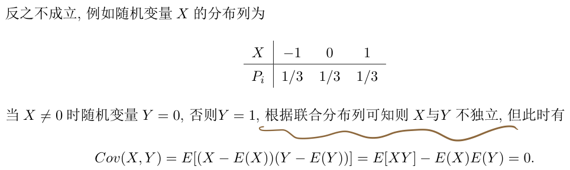
- 另一例子：$X\sim U[-\frac{1}{2},\frac{1}{2}]$，$Y=\cos(X)$，$Cov(X,Y)=0$ 但不独立
$(Cov(X,Y))^2\leq Var(X)Var(Y)$，等号成立的充要条件是 $Y=aX+b$（即 $X$ 与 $Y$ 存在线性关系），可用 Cauchy-Schwartz 不等式证
区分 互斥/独立/不相关，互斥是指2个随机事件不相交
- 相关系数：$\rho_{XY}=\frac{Cov(X,Y)}{\sqrt{Var(X)Var(Y)}}\leq1$ 。一定程度反映了随机变量 $X$ 和 $Y$ 的线性相关程度
- 等号成立的充要条件是 $X$ 与 $Y$ 存在线性相关
- 为什么要使用相关系数？$Cov(X,Y)$ 受数值大小影响，而规范了 $|\rho_{XY}|\leq 1$
- $\rho>0$，$X$ 与 $Y$ 正相关；$\rho <0$，$X$ 与 $Y$ 负相关；$|\rho|=1$，$Y=aX+b$
- $\rho=0$ 称 $X$ 与 $Y$ 不相关（仅表示线性不相关）。独立 $\Rightarrow$ 不相关，不相关 $\not\Rightarrow$ 独立
- 对方差不为零的随机变量 $X$ 和 $Y$，下述条件相互等价
- $\rho_{XY}=0$
- $Cov(X,Y)=0$
- $E(XY)=E(X)E(Y)$
- $Var(X\pm Y)=Var(X)+ Var(Y)$
- 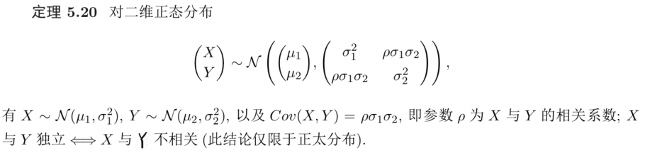
协方差矩阵
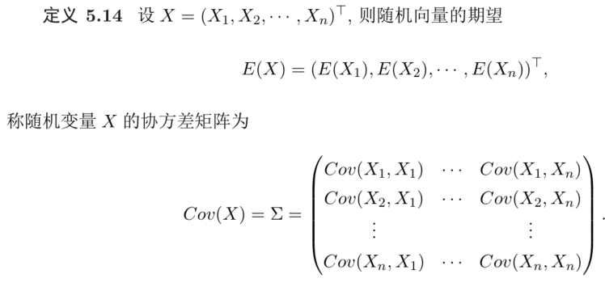
协方差矩阵是对称半正定矩阵
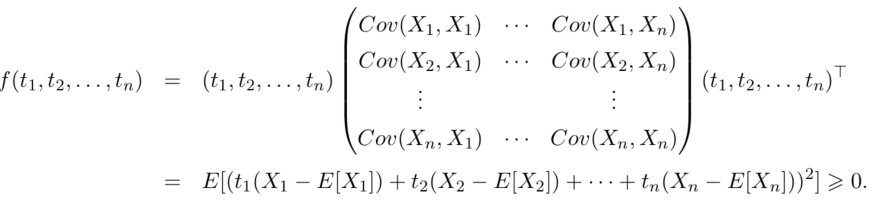
- 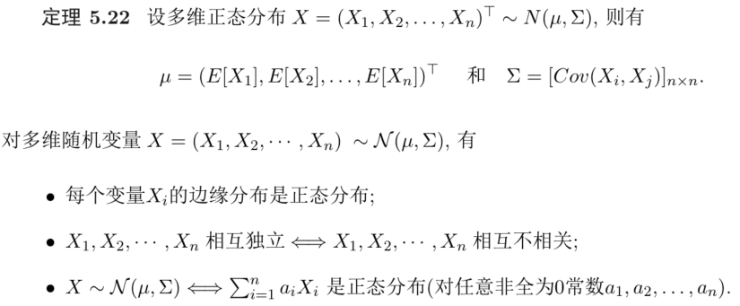
- 全期望公式
- 对随机变量 $X$ 和事件 $A$ 有 $E(X)=E(X|A)P(A)+E(X|\overline{A})(1-P(A))$，其中事件 $\overline{A}$ 为事件 $A$ 的补
- $E(X)=E_Y(E(X|Y))$
- 可用来证明 Markov 不等式 $P(X\geq \epsilon)\leq \frac{E(X)}{\epsilon}$
- $E[X]=P(X\geq \epsilon)\cdot E[X|X\geq \epsilon]+P(X<\epsilon)\cdot E[X|X<\epsilon]\geq P(X\geq\epsilon)\epsilon$
第六章 集中不等式
- Markov 不等式：$P(X\geq\epsilon)\leq\frac{E(X)}{\epsilon}$
Chebyshev 不等式：随机变量 $X$ 均值为 $\mu$，$P(|X-\mu|>\epsilon)\leq \frac{Var(X)}{\epsilon^2}$
- 用 Markov 不等式证：$P(|X-\mu|>\epsilon)=P((X-\mu)^2\geq\epsilon^2)\leq\frac{E(X-\mu)^2}{\epsilon^2}=\frac{Var(X)}{\epsilon^2}$
单边 Chebyshev 不等式：随机变量 $X$ 的均值 $\mu>0$，方差 $\sigma^2$，则对任意 $\epsilon>0$ 有 $P(X-\mu\geq \epsilon)\leq \frac{\sigma^2}{\sigma^2+\epsilon^2}$ 和 $P(X-\mu\leq -\epsilon)\leq \frac{\sigma^2}{\sigma^2+\epsilon^2}$
- 设随机变量 $Y=X-\mu$，有 $E(Y)=0$ 以及 $Var(Y)=\sigma^2$
Chernoff 不等式
$X$ 的矩生成函数：$M_X(t)=E[e^{tX}]$
$E[X^n]=M_X^{(0)}(0)$，$M_X^{(0)}(t)$ 表示矩生成函数在 $t=0$ 的 $n$ 阶导数，$E[X^n]$ 称为随机变量 $X$ 的 $n$ 阶矩
Chernoff 方法：对任意 $\epsilon>0$ 和 $t<0$ 有 $P(X\leq -\epsilon)=P(tX\geq -t\epsilon)\leq e^{t\epsilon}E(e^{tX})$，同理有 $P(X\leq -\epsilon)\leq\min_{t<0}\{e^{t\epsilon}E(e^{tX})\}$
Chernoff 引理：随机变量 $X\in[0,1]$ 的期望 $\mu=E(X)$，对任意 $t>0$ 有 $E(e^{tX})\leq e^{t\mu+\frac{t^2}{8}}$
- 推论：$X\in[a,b]$ 期望 $\mu=E(X)$，对任意 $t>0$ 有 $E(e^{tX})\leq e^{t\mu+\frac{t^2(b-a)^2}{8}}$ （要会推）
Chernoff 不等式（有界随机变量的Chernoff不等式）：设 $X_1,…,X_n$ 是 $n$ 个独立的随机变量，且满足 $X_i\in[a,b]$，对任意 $\epsilon>0$ 有
（要会证）
第七章 大数定律及中心极限定理
大数定律：若一串随机变量序列满足随机变量的均值依概率收敛于期望的均值，则称满足大数定律
- $\frac{1}{n}\sum_{i=1}^n X_i\stackrel{P}{\rightarrow} \frac{1}{n}\sum_{i=1}^n E[X_i]$
- 依概率收敛：设 $X_1,X_2,…,X_n,…$ 是一随机变量序列，$a$ 是一常数，如果对任意 $\epsilon>0$ 有 $\lim_{n\rightarrow ∞}\Pr\{|X_n-a|<\epsilon\}=1$，则称该随机变量序列依概率收敛于 $a$，记 $X_n\stackrel{P}{\rightarrow} a$
- 弱点/局限：只考虑极限，无法考虑有限样本
- 弥补：集中不等式（马尔可夫不等式、chernoff不等式、霍夫丁不等式、McDiarmid’s Inequality）
分类
- Markov 大数定律：不要求独立或同分布，$\frac{1}{n^2}Var(\sum_{i=1}^n X_i)\rightarrow 0$
- Chebyshev 大数定律：独立，方差有界
- 辛钦大数定律：独立同分布，期望存在，不要求方差
- Bernoulli 大数定律：对二项分布 $X_n\sim B(n,p)$，有 $X_n/n\stackrel{P}{\rightarrow} p$
- 如何判断随机变量序列 $X_1,X_2,…,X_n,…$ 满足大数定律
- 若随机变量独立同分布，用辛钦大数定律查看期望是否存在
- 若非独立同分布，用 Markov 大数定律判断方差是否趋于零
中心极限定理：对于独立的随机变量序列 $X_1,X_2,…,X_n,..$，标准化后的随机变量 $Y_n=\frac{\sum_{i=1}^nX_i-\sum_{i=1}^nE(X_i)}{\sqrt{Var(\sum_{i=1}^nX_i)}}$ 依分布收敛于标准正态分布
- 依分布收敛 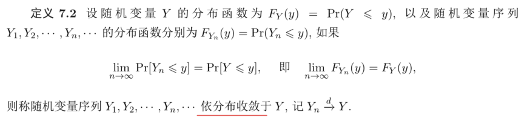
- 独立同分布中心极限定理（林德贝格-勒维中心极限定理）：设独立同分布随机变量 $X_1,X_2,…X_n,…$的期望 $E(X_1)=\mu$，方差 $Var(X_1)=\sigma^2$，则 $Y_n=\frac{\sum_{i=1}^nX_i-n\mu}{\sigma\sqrt{n}}\stackrel{d}{\rightarrow} \mathcal{N}(0,1)$
- 变形：$\sum_{i=1}^nX_i\stackrel{d}{\rightarrow}\mathcal{N}(n\mu,n\sigma^2)$，$\frac{1}{n}\sum_{i=1}^nX_i\stackrel{d}{\rightarrow} \mathcal{N}(\mu,\sigma^2/n)$
大数定律给出了当 $n\rightarrow ∞$ 时随机变量平均值 $\frac{1}{n}\sum_{i=1}^nX_i$ 的趋势，而中心极限定理给出了 $\frac{1}{n}\sum_{i=1}^nX_i$ 的具体分布
第七章 统计的基本概念
- 统计学的概念：以概率论为基础，研究如何有效收集研究对象的随机数据，以及如何运用所获得的数据揭示统计规律的一门学科
- 总体与样本
- 总体：研究对象的全体
- 样本：从总体中随机抽取一些个体，一般表示为 $X_1,X_2,…X_n$，称它们是取自总体 $X$ 的随机样本，样本容量为 $n$
- 统计量：设 $X_1,X_2,…,X_n$ 是来自总体 $X$ 的一个样本，$g(X_1,X_2,…X_n)$ 是关于 $X_1,X_2,…,X_n$ 的一个连续、且不含任意参数的函数
常用统计量
样本方差：$S_0^2=\frac{1}{n}\sum_{i=1}^n(X_i-\overline{X})^2=\frac{1}{n}\sum_{i=1}^nX_i^2-\overline{X}^2$
- 设总体 $X$ 的期望 $\mu$，方差 $\sigma^2$，有 $E[S_0^2]=\frac{n-1}{n}\sigma^2$。说明样本方差 $S_0^2$ 与总体方差 $\sigma^2$ 之间存在偏差
样本标准差：$S_0=\sqrt{S_0^2}=\sqrt{\frac{1}{n}\sum_{i=1}^n(X_i-\overline{X})^2}$
- 修正后的样本方差：$S^2=\frac{n}{n-1}S_0^2=\frac{1}{n-1}\sum_{i=1}^n(X_i-\overline{X})^2$，$E[S^2]=\sigma^2$
- 样本 $k$ 阶原点矩：$A_k=\frac{1}{n}\sum_{i=1}^nX_i^k$
- 样本 $k$ 阶中心距：$B_k=\frac{1}{n}\sum_{i=1}^n(X_i-\overline{X})^k$
- $\mathcal{X}^2$ 分布：若 $X_1,X_2,…,X_n$ 是来自总体 $X\sim \mathcal{N}(0,1)$ 的一个样本，称 $Y=X_1^2+X_2^2+…+X_n^2$ 为服从自由度为 $n$ 的 $\mathcal{X}^2$ 分布，记为 $Y\sim \mathcal{X}^2(n)$
- 若随机变量 $X\sim\mathcal{X}^2(n)$，则 $E(X)=n,Var(X)=2n$
- 若随机变量 $X\sim\mathcal{X}^2(m)$ 和 $Y\sim\mathcal{X}^2(n)$ 相互独立，则 $X+Y\sim\mathcal{X}^2(m+n)$
- 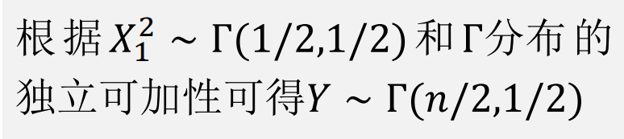
- 分布可加性
- 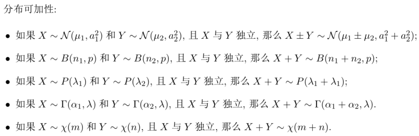
$t$ 分布：随机变量 $X\sim\mathcal{N}(0,1)$ 和 $Y\sim\mathcal{X}^2(n)$ 相互独立，则随机变量 $T=\frac{X}{\sqrt{Y/n}}$ 服从自由度为 $n$ 的 $t-$ 分布，记 $T\sim t(n)$

- $t$ 分布是对称的
F分布
- 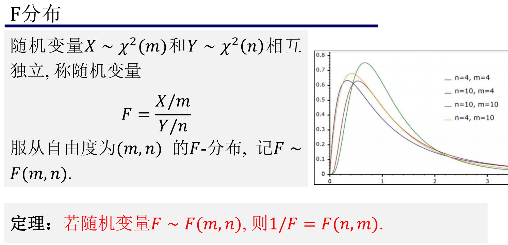
抽样分布定理
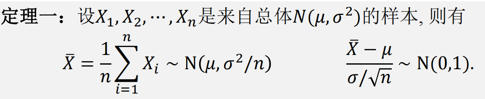
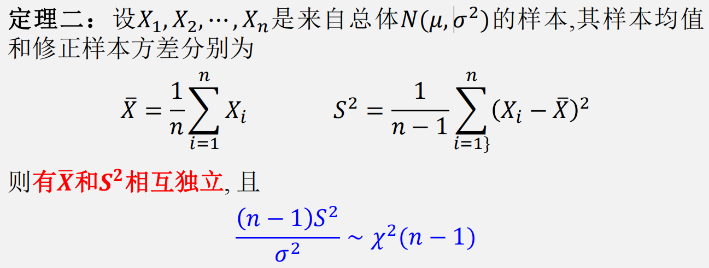
已知方差
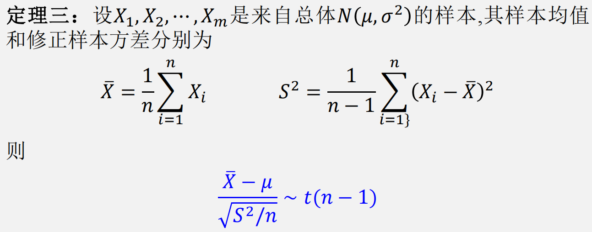
已知均值
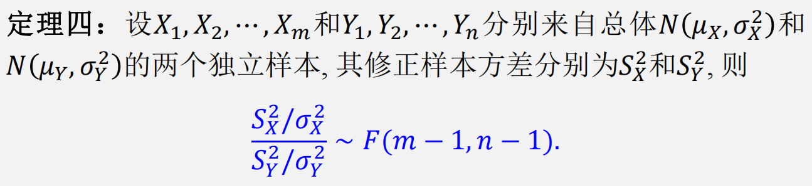
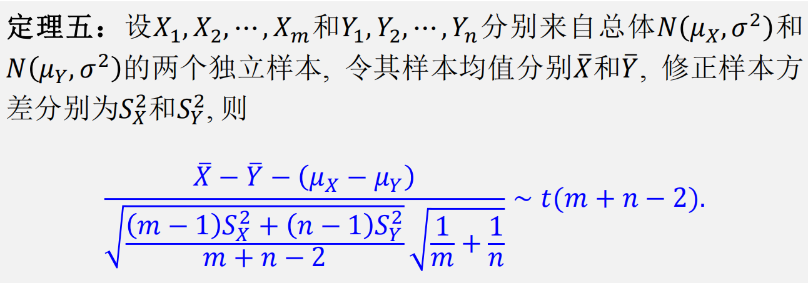
- 只有 $t$ 分布是对称的
- $F_\alpha (m,n)$ 是 $F(m,n)$ 分布上侧 $\alpha$ 分位点，对 $F-$分布的分位点有 $F_{1-\alpha}(m,n)=\frac{1}{F_\alpha (n,m)}$ （没推出来，记一下）
第八章 参数估计
参数估计概念
- 设总体 $X$ 的分布/密度函数为 $F(X,\theta)$，其中 $\theta$ 为未知参数，从总体中抽取一样本 $X_1,X_2,…,X_n$，如何依据此样本估计参数 $\theta$，或 $\theta$ 的函数 $g(\theta)$，此类问题称为参数估计问题
点估计：用样本 $X_1,X_2,…,X_n$ 构造的统计量 $\hat{\theta}(X_1,X_2,…,X_n)$ 来估计未知参数 $\theta$ 称为点估计，统计量 $\hat{\theta}(X_1,X_2,…,X_n)$ 称为估计量
- 点估计包括：矩估计法、极大似然估计法
- 矩估计法：用样本矩去估计总体矩 或 用样本中心矩去估计总体中心矩 求参数 $\theta$ 的方法称为矩估计法
- 极大似然估计法：求最大似然估计量 $\hat{\theta}$ 使观测值 $X_1=x_1,..,X_n=x_n$ 出现概率最大
- 点估计包括：矩估计法、极大似然估计法
估计量的评价标准：无偏性、有效性、一致性
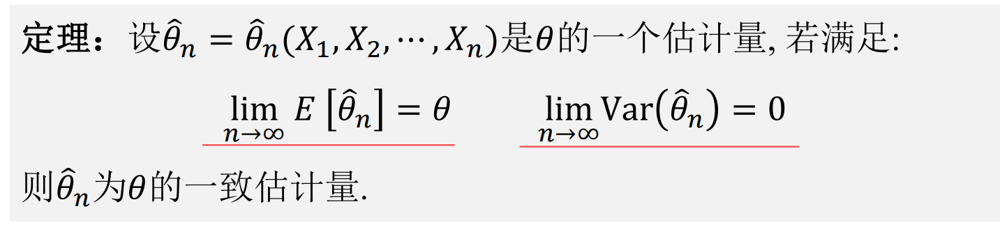
第九章 假设检验
- 假设检验基本思想：小概率原理（小概率事件在一次实验中不应该发生）
- 假设检验概念：根据样本信息来检验关于总体的某个假设是否正确（背！！！）
- （概念区别于参数估计）
- 参数检验问题：总体分布已知，检验某未知参数的假设
- 非参数检验问题：总体分布未知时的假设检验问题
- 假设检验方法（反证）：先假设所做的假设 $H_0$ 成立，然后从总体中取样，根据样本来判断是否有不合理的现象出现，最后做出接受或拒绝所作假设的决定
- 不合理的现象：小概率事件在一次事件中几乎不会发生
- 假设检验的两类错误
- 第一类错误：拒绝实际真的假设 $H_0$（弃真）
- 第二类错误：接收实际不真的假设 $H_0$（存伪）
假设检验的一般步骤
- 根据实际问题提出原假设 $H_0$ 和备择假设 $H_1$
- 确定检验统计量（分布已知）
- 确定显著性水平 $\alpha$，并给出拒绝域
- 由样本计算统计量的实测值，判断是否接受原假设 $H_0$
显著性水平：在假设检验中允许第一类错误的概率，记为 $\alpha$
- 无偏/有偏估计：
- 根据总体样本集求方差就除以总体样本数量，而根据抽样样本集求方差就除以抽样样本集数量减1
- 总体样本集是真正想调查的对象集合，而抽样样本集是从总体样本集中被选出来的部分样本组成的集合，用来估计总体样本集的方差
- 一般来说，总体样本集是不可得的，我们拿到的都是抽样样本集。严格来说，样本方差应除以 $n-1$ 才会得到总体样本的无偏估计，若除以 $n$ 则得到的是有偏估计
其他
- 求期望积分时里面要乘 $x$
- 求概率密度时要注意取值范围。已知 $X$，求 $Y=e^X$ 的概率密度
- 没有 $F(+∞,y)=1$ 这一说
- 区分 概率密度 / 分布函数；边缘概率密度 / 边缘分布函数
- 求期望积分时别忘乘概率密度
- 证明服从 $t$ 分布/ $F$ 分布要另外证明 上下随机变量相互独立